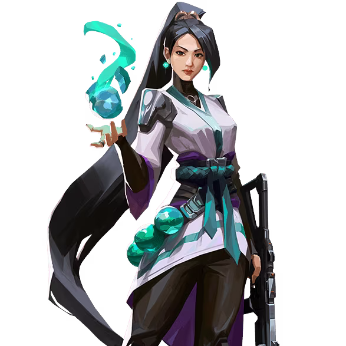

Sage

国籍: 中国
ロール: センチネル
Sageはチームのヒーラーとして、仲間をサポートする能力に長けたエージェントです。彼女のアビリティは、味方の体力を回復させ、エリアを制御するために効果的です。
スキル
| スキル名 | 値段 | 所持上限 | 説明 |
|---|---|---|---|
| バリアオーブ (Q) | 400 | 1個 | 強力なバリアを展開し、敵の進行を阻止します。バリアは耐久値を持ち、一定時間で消えます。 |
| スロウオーブ (E) | 200 | 2個 | スロウフィールドを作り出し、範囲内の敵の移動速度を大幅に低下させます。 |
| ヒールオーブ (C) | 無料 | 1個 | 味方の体力を回復させるオーブを発射します。自分自身にも使用可能です。 |
| リザレクション (X) - アルティメット | - | 1個 | 倒れた味方を復活させることができます。復活した味方は完全な体力で戦闘に戻ります。 |
立ち回りとおすすめマップ
攻めの立ち回り
Sageは味方をサポートする役割を持つため、チームの後方から回復やバリア設置を行いながら進行します。スロウオーブを使って敵の動きを制限し、バリアオーブで安全なルートを確保しましょう。
守りの立ち回り
守りでは、バリアオーブを使って敵の進行を遅らせることができます。スロウオーブを使って敵のラッシュを防ぎ、ヒールオーブで味方の体力を管理します。リザレクションは、重要なタイミングで使用して、チームに有利な状況を作り出しましょう。
ヒールオーブの使い方
ヒールオーブは、戦闘中にダメージを受けた味方に迅速に使用することで、チームの持続力を高めることができます。自分自身にも使用可能なので、適切なタイミングで使用して生存率を上げましょう。
リザレクションの使い方
リザレクションは、ラウンドの流れを変える強力なスキルです。味方が倒された後、安全な状況で使用して復活させることで、チームに大きなアドバンテージをもたらします。